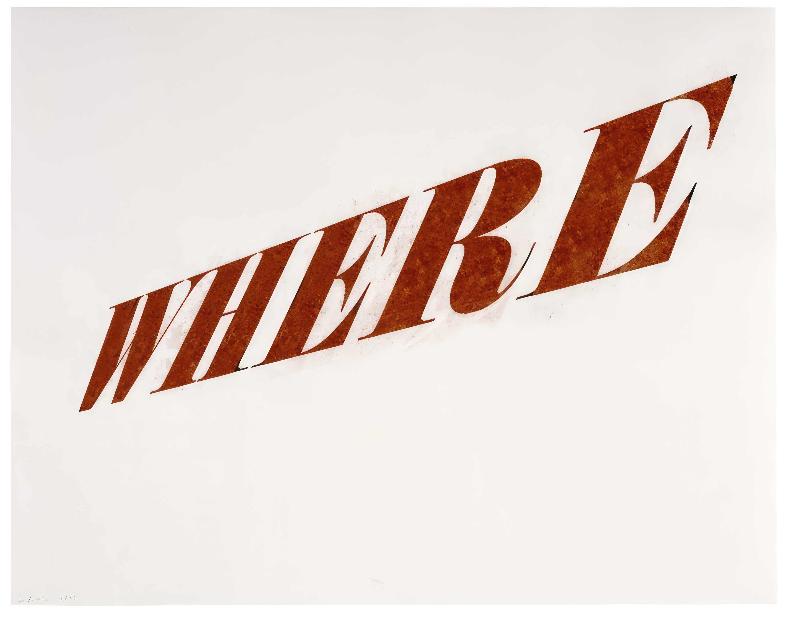
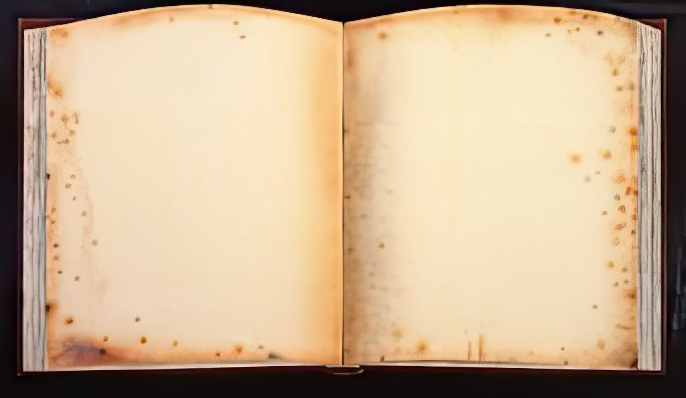

Model wearing Lilly Dache Hat Talbot, Cloisters of Lacock Abbey, 1884 Osullivan, Shoshone Falls, 1874 UV Explorer Hat, Bluish Teal, 2004

Kaja Dream Image, Where, 2023 Ruscha, Mercy #2, 1973 Leonardo, Recto Leonardo, Verso Kaja Dream Image, Old Book and Camera Obscura, 2023 Install photograph from "Ed Ruscha" at Gagosian New York, 2013 Ed Ruscha, Old Book Back Then, 2011

Ed Ruscha, Old Book Today, 2011 Ed Ruscha, Old Book With Wormholes, 2011 Kaja Dream of The Before, 2023